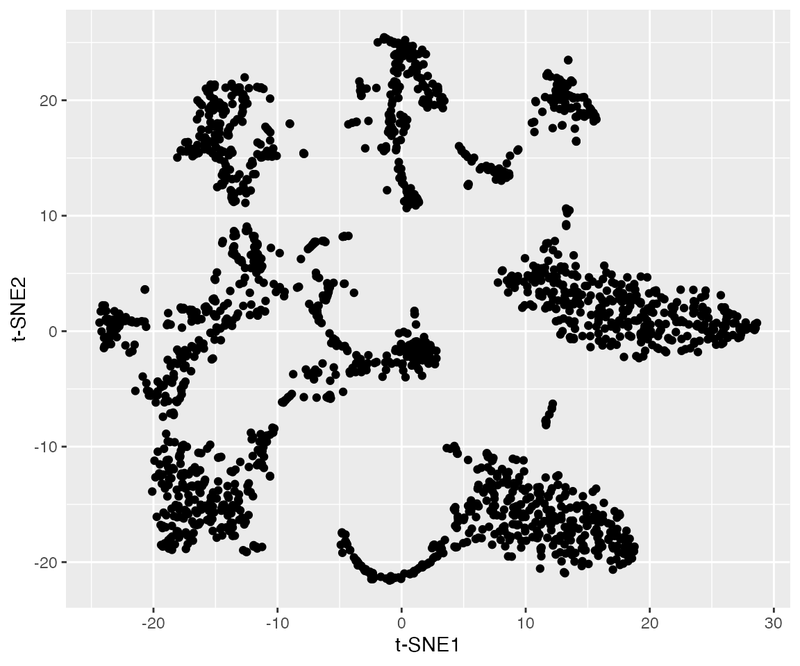
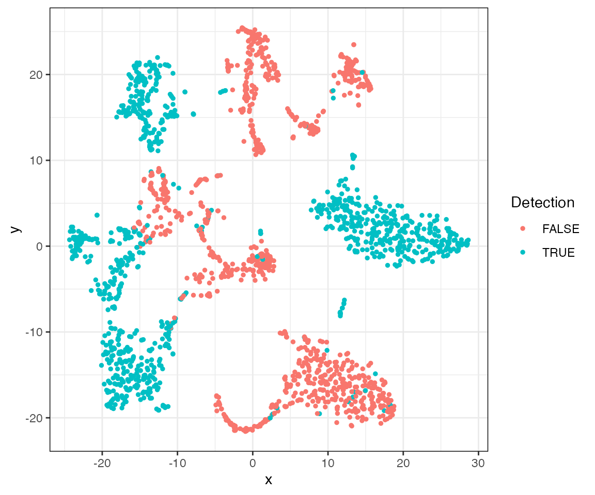
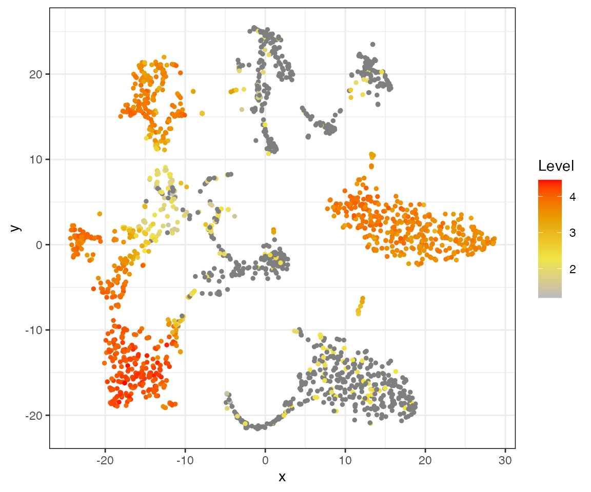
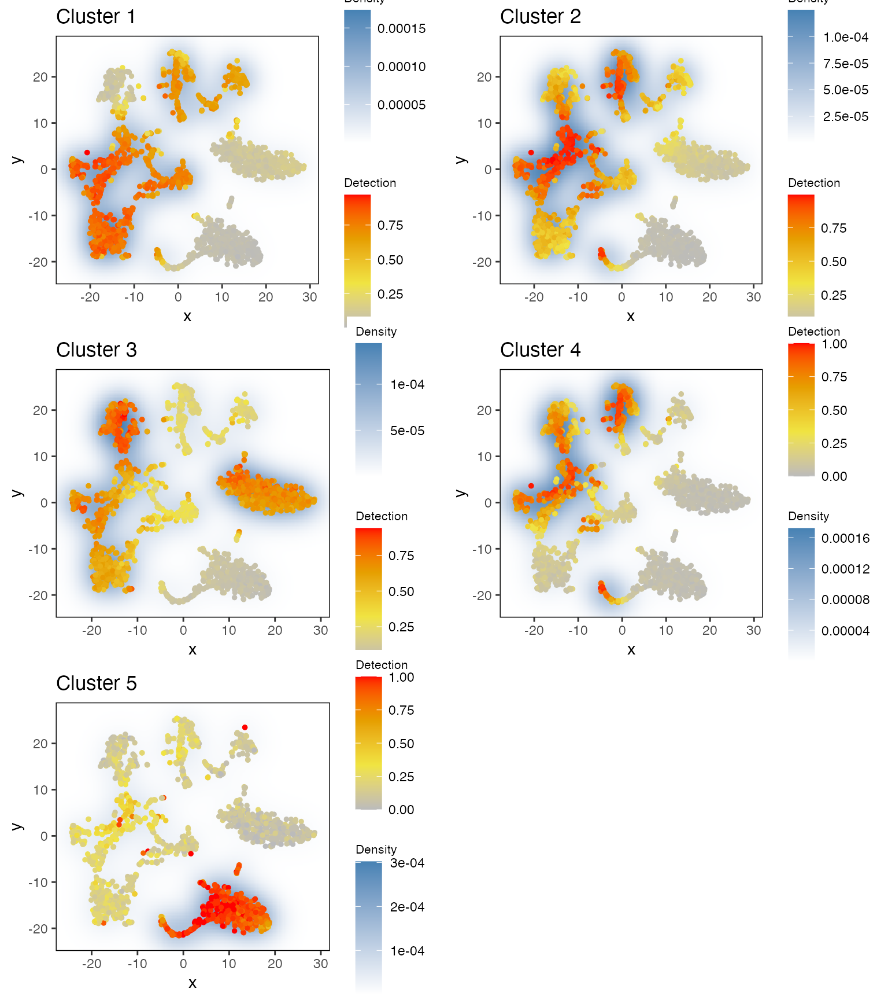

a06_example_tsne2D_default.RmdThe data used in these examples can be found here. We recommend downloading the .rda file and loading it using the load() function. You can also download the individual data files separately.
load(url("https://ndownloader.figshare.com/files/24593213"))
ls()
#> [1] "dat.expression" "dat.pca" "dat.tsne" "dat.umap"This data should include the following objects:
dat.expression: a matrix object with the expression of genes (rows) in each cell (columns).dat.pca: the output of PCA. This data.frame contains thefirst 50 pricipal components.dat.tsne: a data.frame with t-SNE coordinates (2D).dat.umap: a data.frame with UMAP coordinates (2D).Let’s have a look at this example dataset:
# this data contains 12,030 genes and 1981 cells
dim(dat.expression)
#> [1] 12030 1981
# visualizing the cells in a t-SNE plot:
ggplot(dat.tsne, aes(x = V1, y = V2)) + labs(x = "t-SNE1", y = "t-SNE2") + geom_point()
# the t-SNE coordinates are based on the 50 PCs
dim(dat.pca) # the PCA data contains 1981 cells and 50 PCs
#> [1] 1981 50There are several groups of cells, although the borders between them are not clear and several might consist of additional subclusters. We can use singleCellHaystack to predict DEGs without relying on grouping of the cells into arbitrary clusters.
singleCellHaystack has two required input parameters: 1) the coordinates of cells in the input space, and 2) a table showing which genes are detected in which cells. The definition of detection is left to the user. In this example we will use the median normalized read count of each gene as threshold for defining detection. Alternatively, we could also define genes with counts > 0 as being detected, for example.
median.per.gene <- apply(dat.expression,1,median) # get the median read count per gene
head(median.per.gene) # for many genes the median read count is 0
#> Mrpl15 Lypla1 Rb1cc1 Sgk3 Snhg6 Tram1
#> 0.000 0.000 0.000 0.000 0.000 136.243
dat.detection <- dat.expression > median.per.gene # use the medians as threshold for defining detection
dat.detection[1:5,1:5] # TRUE means detected, FALSE means not detected
#> AAACCTGCAGTAACGG.1 AAACGGGAGAAGAAGC.1 AAACGGGAGACCGGAT.1
#> Mrpl15 TRUE FALSE FALSE
#> Lypla1 TRUE FALSE FALSE
#> Rb1cc1 TRUE FALSE FALSE
#> Sgk3 TRUE FALSE FALSE
#> Snhg6 TRUE FALSE FALSE
#> AAACGGGAGCGCTCCA.1 AAACGGGAGGACGAAA.1
#> Mrpl15 FALSE TRUE
#> Lypla1 FALSE TRUE
#> Rb1cc1 FALSE FALSE
#> Sgk3 FALSE FALSE
#> Snhg6 TRUE FALSEhaystack on 2D coordinatesFirst, load the package.
library(singleCellHaystack)Next, run haystack on the t-SNE coordinates. These are 2D coordinates, so we set ‘method’ to ‘2D’. We also give the detection values as input to ‘detection’. This example dataset is relatively small, containing 1,981 cells, so running ‘haystack’ should take just 1 to 3 minutes to finish. We also set a random seed to ensure replicability.
set.seed(123)
res.tsne <- haystack(x = dat.tsne, detection = dat.detection, method = "2D")
#> ### calling haystack_2D()...
#> ### setting parameters...
#> ### calculating Kullback-Leibler divergences...
#> ### performing randomizations...
#> ### estimating p-values...
#> ### returning result...Let’s have a look at the most significant DEGs. The gene with the strongest differential expression is Lyz1. We can plot the expression and detection of this gene using the plot_gene_haystack function. From the plots we can see that Lyz1 is not detected in the upper right and lower right groups of cells.
show_result_haystack(res.haystack = res.tsne, n = 5)
#> D_KL log.p.vals log.p.adj T.counts
#> Lyz1 0.9899380 -71.85654 -67.77627 990
#> Lyz2 0.9870778 -71.77112 -67.69085 990
#> Rps11 0.9763735 -71.44969 -67.36942 990
#> Rpl10 0.9718911 -71.31427 -67.23400 990
#> Eef1a1 0.9718311 -71.31245 -67.23218 990
# plotting detection of this gene
plot_gene_haystack(x = dat.tsne, gene = "Lyz1", expression = dat.detection)
# plotting log expression of this gene
plot_gene_haystack(x = dat.tsne, gene = "Lyz1", expression = log10(dat.expression)) 
Next, let’s take the top 1000 DEGs, and cluster them by their expression pattern in the 2D t-SNE coordinates. Here we use hclust_haystack, which uses hierarchical clustering. Alternatively, we could use kmeans_haystack for k-means clustering.
# get the top 1000 DEGs in the result
res.top <- show_result_haystack(res.haystack = res.tsne, n = 1000)
# cluster DEGs by their expression pattern in the 2D plot
genes.top <- row.names(res.top)
res.hc <- hclust_haystack(x = dat.tsne, genes = genes.top, detection = dat.detection)hclust_haystack returns as result a hclust tree, which we can cut into clusters using the cutree function. Here, we arbitrarily set the number of clusters to 5.
res.hc.clusters <- cutree(res.hc, k=5)
table(res.hc.clusters)
#> res.hc.clusters
#> 1 2 3 4 5
#> 233 362 215 163 27While some clusters contain hunderds of genes, others are quite small.
Let’s run through the 5 clusters and plot their averaged detection pattern using plot_gene_set_haystack, which is similar to plot_gene_haystack but uses a set of genes as input instead of just 1 gene.
pl <- lapply(1:5, function(cluster) {
gene.set <- names(res.hc.clusters)[res.hc.clusters==cluster]
plot.title <- paste0("Cluster ", cluster)
p <- plot_gene_set_haystack(x = dat.tsne, genes = gene.set, detection = dat.detection)
p + ggtitle(plot.title) + theme(legend.title = element_text(size = 8))
})
plot_grid(plotlist = pl, ncol = 2)
res.hc.clusters["Lyz1"] # the most significant DEG is in cluster 3
#> Lyz1
#> 3The most significant DEG, Lyz1, was clustered into cluster 3. Comparing its expression pattern (see above) with that of each cluster, we can indeed see that it fits most closely with that of cluster 3. The pattern of cluster 5 (containing just a few genes) is rather different from all other clusters.